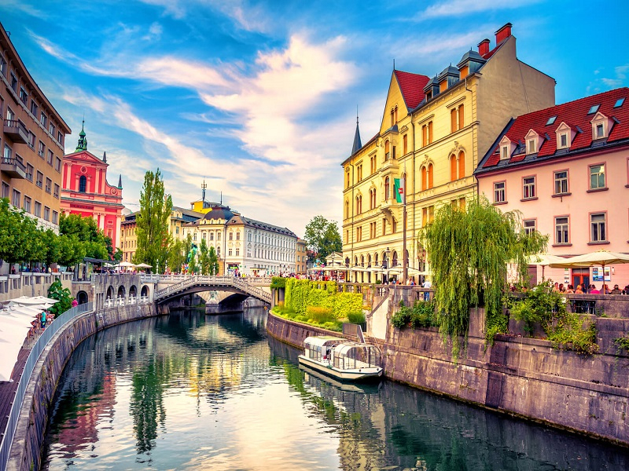

Galerija putovanja
Ljubljana,glavni grad Slovenije, poznata je po svojoj očaravajućoj arhitekturi, zelenim površinama i prijatnoj atmosferi.
Smeštena na obalama reke Ljubljanice, ovaj grad kombinuje bogatu istoriju i živahnu energiju modernog urbanog života,
čineći je idealnom destinacijom za sve koji traže opušten i kulturno bogat boravak.
Beograd je glavni grad Srbije, sa bogatom istorijom i živahnim noćnim životom.
Grad šarmira svojim restoranima, kulturnim znamenitostima i dinamikom.

Split je živopisni grad na Jadranu, poznat po bogatoj istoriji i Dioklecijanovoj palati.
Osim kulturnih znamenitosti, grad nudi prelepe plaže i autentičan mediteranski ugođaj.
Budva je obalni grad Crne Gore poznata po plažama, starom gradu i noćnom životu.
Idealna je za dnevni odmor na plaži, ali i večernje šetnje kroz istorijske ulice.
Ohrid, na obali istoimenog jezera, je kulturni dragulj Severne Makedonije sa brojnim crkvama i starim gradom.
Pogledi na jezero i bogata istorija čine ga mestom mira i posebnog šarma.